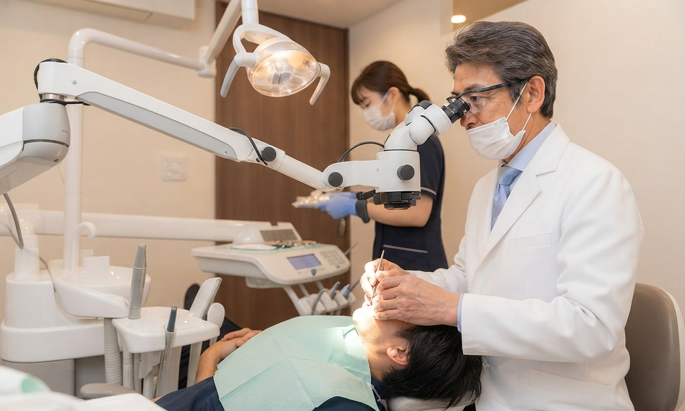
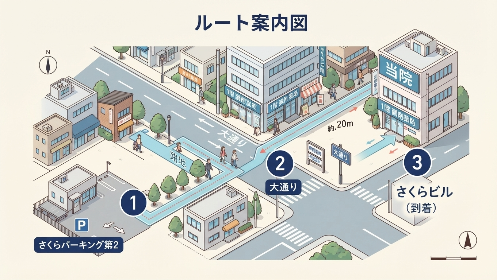

お口の健康から、
笑顔あふれる毎日をサポート
中央町の「さくら台デンタルクリニック」です。
患者様が安心して受診できるよう、優しく丁寧な説明・治療を心がけています。

初診の方も安心の優しい雰囲気
「歯医者さんは緊張する」というイメージをお持ちではありませんか？
当院では、いつも笑顔で優しいスタッフが患者様とのコミュニケーションを大切にし、
リラックスできる温かい環境づくりに努めています。
丁寧なカウンセリング
治療前の不安や疑問を解消するため、優しいスタッフが分かりやすい言葉で丁寧に説明を行います。患者様が納得された上で治療を進めます。
便利なアクセス環境
さくら台駅西口近く、また近隣コインパーキングの30分無料券をご用意。お車でも安心してお越しいただけます。
診療内容のご案内
当院では、虫歯や歯周病の治療といった日常的な歯科診療を中心に、患者様のニーズに合わせてインプラントやホワイトニング、矯正などの自費診療も一部取り扱っております。
虫歯・歯周病治療（主な診療）
歯が痛い、歯ぐきが腫れる・出血するなど、日々の健康を守るための一般的な保険診療を中心に行っております。早期発見・早期治療でお口の健康をしっかりサポートします。
その他のご相談について
インプラント、ホワイトニング、矯正歯科などの自費診療についてもご相談を承っております。患者様のご希望や症状に合わせてご案内いたしますので、お気軽にお声がけください。
診療時間・ご予約のご案内
当院はご予約優先制となっております。
ご予約やお問い合わせはお電話にて承っておりますので、お気軽にご連絡ください。
診療カレンダー
| 診療時間 | 月 | 火 | 水 | 木 | 金 | 土 | 日・祝 |
|---|---|---|---|---|---|---|---|
|
9:30 〜 13:30 （午前受付） |
|||||||
|
13:30 〜 15:00 （昼休み） |
昼休み（休診） | 午後休診 | 昼休み（休診） | 午後休診 | 午後休診 | ||
|
15:00 〜 19:00 （午後受付） |
休診 | 休診 | |||||
午前：9:30 〜 13:30
昼休み：13:30 〜 15:00
午後：15:00 〜 19:00
午前のみ診療：9:30 〜 13:30
※木曜・土曜の午後は休診となります
アクセス・駐車場案内
住所：中央町1丁目5番地（さくらビル2F）
さくら台駅からの道のり（徒歩3分）
さくら台駅の西口を出てすぐのロータリー前にある「さくらビル」の2階です。1階に調剤薬局が入っておりますので、そちらが目印となります（中央町一丁目5番地）。
コインパーキング利用 30分無料券
お車でお越しの患者様向けに、提携コインパーキングでご利用いただける「30分無料券」をお渡ししております。受付にお気軽にお申し付けください。
駐車場を出て、すぐ左側の路地へ進みます。
路地を直進して大通りに出ましたら、左に曲がって20mほどお進みください。
1階に調剤薬局が入っている「さくらビル」の2階が当院です。

駐車証明書をお持ちください
コインパーキング精算機で発行される「駐車証明書」を受付にご提示いただけますと、スムーズに30分無料券をお渡しできます。
院長・スタッフ紹介
患者様に安心してご来院いただけるよう、いつも笑顔で優しいスタッフと院長がお迎えいたします。

藤井 雅彦
経歴：〇〇大学歯学部 卒業
所属：日本歯周病学会 所属
「地域の皆様のお口の健康を守り、優しいスタッフと共に笑顔で通っていただけるクリニックを目指しています。虫歯や歯周病の治療を中心に、お気軽にご相談ください。」

温かい心配りと笑顔
「当院のスタッフはみんな優しくアットホームです！緊張されている患者様が少しでもリラックスできるよう、温かい笑顔と丁寧なコミュニケーションを心がけています。何でもお気軽にお声がけくださいね。」